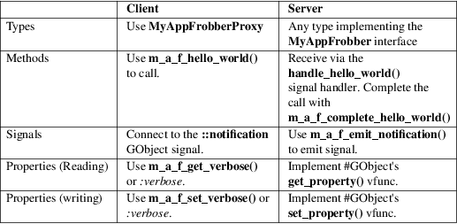

gdbus-codegen − D−Bus code and documentation generator
|
gdbus−codegen [−h, −−help] [−−interface−prefix org.project.Prefix] [−−generate−c−code OUTFILES] [−−c−namespace YourProject] [−−c−generate−object−manager] [−−c−generate−autocleanup none|objects|all] [−−output−directory OUTDIR] [−−generate−docbook OUTFILES] [−−generate−rst OUTFILES] [−−pragma−once] [−−xml−files FILE] [−−header] [−−body] [−−interface−info−header] [−−interface−info−body] [−−symbol−decorator DECORATOR] [−−symbol−decorator−header HEADER] [−−symbol−decorator−define DEFINE] [−−output OUTFILE] [−−annotate ELEMENT KEY VALUE]... [−−glib−min−required VERSION] [−−glib−max−allowed VERSION] FILE [FILE...] |
gdbus−codegen is used to generate code and/or documentation for one or more D−Bus interfaces.
gdbus−codegen reads D−Bus Introspection XML [1] from files passed as additional arguments on the command line and generates output files. It currently supports generating C source code (via −−body) or header (via −−header) and Docbook XML (via −−generate−docbook). Alternatively, more restricted C source code and headers can be generated, which just contain the interface information (as GDBusInterfaceInfo structures) using −−interface−info−body and −−interface−info−header.
When generating C code, a #GInterface −derived type is generated for each D−Bus interface. Additionally, for every generated type, FooBar, two concrete instantiatable types, FooBarProxy and FooBarSkeleton, implementing said interface are also generated. The former is derived from #GDBusProxy and intended for use on the client side while the latter is derived from the #GDBusInterfaceSkeleton type making it easy to export on a #GDBusConnection either directly or via a #GDBusObjectManagerServer instance.
For C code generation either −−body that generates source code, −−header that generates headers, −−interface−info−body that generates interface information source code, or −−interface−info−header that generates interface information headers, can be used. These options must be used along with −−output, which is used to specify the file to output to.
Both files can be generated at the same time by using −−generate−c−code, but this option is deprecated. In this case −−output cannot be used due to the generation of multiple files. Instead pass −−output−directory to specify the directory to put the output files in. By default the current directory will be used.
The name of each generated C type is derived from the D−Bus interface name stripped with the prefix given with −−interface−prefix and with the dots removed and initial characters capitalized. For example, for the D−Bus interface com.acme.Coyote the name used is ComAcmeCoyote. For the D−Bus interface org.project.Bar.Frobnicator with −−interface−prefix org.project., the name used is BarFrobnicator.
For methods, signals and properties, if not specified, the name defaults to the name of the method, signal or property.
Two forms of the name are used − the CamelCase form and the lower−case form. The CamelCase form is used for the #GType and struct name, while lower−case form is used in function names. The lower−case form is calculated by converting from CamelCase to lower−case and inserting underscores at word boundaries (using certain heuristics).
If the value given by the org.gtk.GDBus.C.Name annotation or the −−c−namespace option contains an underscore (sometimes called Ugly_Case), then the camel−case name is derived by removing all underscores, and the lower−case name is derived by lower−casing the string. This is useful in some situations where abbreviations are used. For example, if the annotation is used on the interface net.MyCorp.MyApp.iSCSITarget with the value iSCSI_Target the CamelCase form is iSCSITarget while the lower−case form is iscsi_target. If the annotation is used on the method EjectTheiPod with the value Eject_The_iPod, the lower−case form is eject_the_ipod.
Each generated Docbook XML file (see the −−generate−docbook option for details) is a RefEntry [2] article describing the D−Bus interface.
Each generated reStructuredText file (see the −−generate−rst option for details) is a plain text reStructuredText [3] document describing the D−Bus interface.
The following options are supported:
−h, −−help
Show help and exit.
−−xml−files FILE
This option is deprecated; use positional arguments instead. The D−Bus introspection XML file.
−−interface−prefix org.project.Prefix.
A prefix to strip from all D−Bus interface names when calculating the typename for the C binding and the Docbook sortas attribute [4] .
−−generate−docbook OUTFILES
Generate Docbook Documentation for each D−Bus interface and put it in OUTFILES−NAME.xml where NAME is a place−holder for the interface name, e.g. net.Corp.FooBar and so on.
Pass −−output−directory to specify the directory to put the output files in. By default the current directory will be used.
−−generate−rst OUTFILES
Generate reStructuredText Documentation for each D−Bus interface and put it in OUTFILES−<replaceanle>NAME</replaceanle>.rst where NAME is a place−holder for the interface name, e.g. net.Corp.FooBar and so on.
Pass −−output−directory to specify the directory to put the output files in. By default the current directory will be used.
−−generate−c−code OUTFILES
Generate C code for all D−Bus interfaces and put it in OUTFILES.c and OUTFILES.h including any sub−directories. If you want the files to be output in a different location use −−output−directory as OUTFILES.h including sub−directories will be referenced from OUTFILES.c.
The full paths would then be $(OUTDIR)/$(dirname $OUTFILES)/$(basename $OUTFILES).{c,h}.
−−c−namespace YourProject
The namespace to use for generated C code. This is expected to be in CamelCase [5] or Ugly_Case (see above).
−−pragma−once
If this option is passed, the #pragma once [6] preprocessor directive is used instead of include guards.
−−c−generate−object−manager
If this option is passed, suitable #GDBusObject, #GDBusObjectProxy, #GDBusObjectSkeleton and #GDBusObjectManagerClient subclasses are generated.
−−c−generate−autocleanup none|objects|all
This option influences what types autocleanup functions are generated for. 'none' means to not generate any autocleanup functions. 'objects' means to generate them for object types, and 'all' means to generate them for object types and interfaces. The default is 'objects' due to a corner case in backwards compatibility with a few projects, but you should likely switch your project to use 'all'. This option was added in GLib 2.50.
−−output−directory OUTDIR
Directory to output generated source to. Equivalent to changing directory before generation.
This option cannot be used with −−body, −−header, −−interface−info−body or −−interface−info−header; and −−output must be used.
−−header
If this option is passed, it will generate the header code and write it to the disk by using the path and file name provided by −−output.
Using −−generate−c−code, −−generate−docbook or −−output−directory are not allowed to be used along with −−header and −−body options, because these options are used to generate only one file.
−−body
If this option is passed, it will generate the source code and write it to the disk by using the path and file name provided by −−output.
Using −−generate−c−code, −−generate−docbook or −−output−directory are not allowed to be used along with −−header and −−body options, because these options are used to generate only one file.
−−interface−info−header
If this option is passed, it will generate the header code for the GDBusInterfaceInfo structures only and will write it to the disk by using the path and file name provided by −−output.
Using −−generate−c−code, −−generate−docbook or −−output−directory are not allowed to be used along with the −−interface−info−header and −−interface−info−body options, because these options are used to generate only one file.
−−interface−info−body
If this option is passed, it will generate the source code for the GDBusInterfaceInfo structures only and will write it to the disk by using the path and file name provided by −−output.
Using −−generate−c−code, −−generate−docbook or −−output−directory are not allowed to be used along with the −−interface−info−header and −−interface−info−body options, because these options are used to generate only one file.
−−symbol−decorator DECORATOR
If a DECORATOR is passed in with this option, all the generated function prototypes in the generated header will be marked with DECORATOR. This can be used, for instance, to export symbols from code generated with gdbus−codegen. This option is added in GLib−2.66
−−symbol−decorator−header HEADER
If a HEADER is passed in with this option, the generated header will put a #include HEADER before the rest of the items, except for the inclusion guards or #pragma once (if −−pragma−once is used). This is used if using another header file is needed for the decorator passed in via −−symbol−decorator to be defined. This option is added in GLib−2.66.
This option can only be used if −−symbol−decorator is used.
−−symbol−decorator−define DEFINE
If a DEFINE is passed in with this option, the generated source will add a #define DEFINE before the rest of the items. This is used if a particular macro is needed to ensure the decorator passed in via −−symbol−decorator uses the correct definition when the generated source is being compiled. This option is added in GLib−2.66.
This option can only be used if −−symbol−decorator is used.
−−output OUTFILE
The full path where the header (−−header, −−interface−info−header) or the source code (−−body, −−interface−info−body) will be written, using the path and filename provided by −−output. The full path could be something like $($OUTFILE).{c,h}.
Using −−generate−c−code, −−generate−docbook or −−output−directory is not allowed along with −−output, because the latter is used to generate only one file.
−−annotate ELEMENT KEY VALUE
Used to inject D−Bus annotations into the given XML files. It can be used with interfaces, methods, signals, properties and arguments in the following way:
gdbus−codegen
−−c−namespace MyApp \
−−generate−c−code
myapp−generated \
−−annotate "org.project.InterfaceName"
\
org.gtk.GDBus.C.Name MyFrobnicator \
−−annotate
"org.project.InterfaceName:Property" \
bar bat \
−−annotate
"org.project.InterfaceName.Method()" \
org.freedesktop.DBus.Deprecated true \
−−annotate
"org.project.InterfaceName.Method()[arg_name]" \
snake hiss \
−−annotate
"org.project.InterfaceName::Signal" \
cat meow \
−−annotate
"org.project.InterfaceName::Signal[arg_name]" \
dog wuff \
myapp−dbus−interfaces.xml
Any UTF−8 string can be used for KEY and VALUE.
−−glib−min−required VERSION
Specifies the minimum version of GLib which the code generated by gdbus−codegen can depend on. This may be used to make backwards−incompatible changes in the output or behaviour of gdbus−codegen in future, which users may opt in to by increasing the value they pass for −−glib−min−required. If this option is not passed, the output from gdbus−codegen is guaranteed to be compatible with all versions of GLib from 2.30 upwards, as that is when gdbus−codegen was first released.
Note that some version parameters introduce incompatible changes: all callers of the generated code might need to be updated, and if the generated code is part of a library's API or ABI, then increasing the version parameter can result in an API or ABI break.
The version number must be of the form MAJOR.MINOR.MICRO, where all parts are integers. MINOR and MICRO are optional. The version number may not be smaller than 2.30.
If the version number is 2.64 or greater, the generated code will have the following features: (1) If a method has h (file descriptor) parameter(s), a GUnixFDList parameter will exist in the generated code for it (whereas previously the annotation org.gtk.GDBus.C.UnixFD was required), and (2) Method call functions will have two additional arguments to allow the user to specify GDBusCallFlags and a timeout value, as is possible when using g_dbus_proxy_call().
−−glib−max−allowed VERSION
Specifies the maximum version of GLib which the code generated by gdbus−codegen can depend on. This may be used to ensure that code generated by gdbus−codegen is compilable with specific older versions of GLib that your software has to support.
The version number must be of the form MAJOR.MINOR.MICRO, where all parts are integers. MINOR and MICRO are optional. The version number must be greater than or equal to that passed to −−glib−min−required. It defaults to the version of GLib which provides this gdbus−codegen.
The following D−Bus annotations are supported by gdbus−codegen:
org.freedesktop.DBus.Deprecated
Can be used on any <interface>, <method>, <signal> and <property> element to specify that the element is deprecated if its value is true. Note that this annotation is defined in the D−Bus specification [1] and can only assume the values true and false. In particular, you cannot specify the version that the element was deprecated in nor any helpful deprecation message. Such information should be added to the element documentation instead.
When generating C code, this annotation is used to add #G_GNUC_DEPRECATED to generated functions for the element.
When generating Docbook XML, a deprecation warning will appear along the documentation for the element.
org.gtk.GDBus.Since
Can be used on any <interface>, <method>, <signal> and <property> element to specify the version (any free−form string but compared using a version−aware sort function) the element appeared in.
When generating C code, this field is used to ensure function pointer order for preserving ABI/API, see the section called “STABILITY GUARANTEES”.
When generating Docbook XML, the value of this tag appears in the documentation.
org.gtk.GDBus.DocString
A string with Docbook content for documentation. This annotation can be used on <interface>, <method>, <signal>, <property> and <arg> elements.
org.gtk.GDBus.DocString.Short
A string with Docbook content for short/brief documentation. This annotation can only be used on <interface> elements.
org.gtk.GDBus.C.Name
Can be used on any <interface>, <method>, <signal> and <property> element to specify the name to use when generating C code. The value is expected to be in CamelCase [5] or Ugly_Case (see above).
org.gtk.GDBus.C.ForceGVariant
If set to a non−empty string, a #GVariant instance will be used instead of the natural C type. This annotation can be used on any <arg> and <property> element.
org.gtk.GDBus.C.UnixFD
If set to a non−empty string, the generated code will include parameters to exchange file descriptors using the #GUnixFDList type. This annotation can be used on <method> elements.
As an easier alternative to using the org.gtk.GDBus.DocString annotation, note that parser used by gdbus−codegen parses XML comments in a way similar to gtk−doc [7] :
Note that @since can be used in any inline documentation bit (e.g. for interfaces, methods, signals and properties) to set the org.gtk.GDBus.Since annotation. For the org.gtk.GDBus.DocString annotation (and inline comments), note that substrings of the form #net.Corp.Bar, net.Corp.Bar.FooMethod(), #net.Corp.Bar::BarSignal and #net.Corp.InlineDocs:BazProperty are all expanded to links to the respective interface, method, signal and property. Additionally, substrings starting with @ and % characters are rendered as parameter [8] and constant [9] respectively.
If both XML comments and org.gtk.GDBus.DocString or org.gtk.GDBus.DocString.Short annotations are present, the latter wins.
Consider the following D−Bus Introspection XML.
<node>
<interface name="net.Corp.MyApp.Frobber">
<method name="HelloWorld">
<arg name="greeting" direction="in"
type="s"/>
<arg name="response" direction="out"
type="s"/>
</method>
<signal
name="Notification">
<arg name="icon_blob" type="ay"/>
<arg name="height" type="i"/>
<arg name="messages" type="as"/>
</signal>
<property
name="Verbose" type="b"
access="readwrite"/>
</interface>
</node>
If gdbus−codegen is used on this file like this:
gdbus−codegen
−−generate−c−code
myapp−generated \
−−c−namespace MyApp \
−−interface−prefix net.corp.MyApp. \
net.Corp.MyApp.Frobber.xml
two files called myapp−generated.[ch] are generated. The files provide an abstract #GTypeInterface −derived type called MyAppFrobber as well as two instantiatable types with the same name but suffixed with Proxy and Skeleton. The generated file, roughly, contains the following facilities:
/*
GType macros for the three generated types */
#define MY_APP_TYPE_FROBBER (my_app_frobber_get_type ())
#define MY_APP_TYPE_FROBBER_SKELETON
(my_app_frobber_skeleton_get_type ())
#define MY_APP_TYPE_FROBBER_PROXY
(my_app_frobber_proxy_get_type ())
typedef struct _MyAppFrobber MyAppFrobber; /* Dummy typedef */
typedef
struct
{
GTypeInterface parent_iface;
/*
Signal handler for the ::notification signal */
void (*notification) (MyAppFrobber *proxy,
GVariant *icon_blob,
gint height,
const gchar* const *messages);
/*
Signal handler for the ::handle−hello−world
signal */
gboolean (*handle_hello_world) (MyAppFrobber *proxy,
GDBusMethodInvocation *invocation,
const gchar *greeting);
} MyAppFrobberIface;
/*
Asynchronously calls HelloWorld() */
void
my_app_frobber_call_hello_world (MyAppFrobber *proxy,
const gchar *greeting,
GCancellable *cancellable,
GAsyncReadyCallback callback,
gpointer user_data);
gboolean
my_app_frobber_call_hello_world_finish (MyAppFrobber *proxy,
gchar **out_response,
GAsyncResult *res,
GError **error);
/*
Synchronously calls HelloWorld(). Blocks calling thread. */
gboolean
my_app_frobber_call_hello_world_sync (MyAppFrobber *proxy,
const gchar *greeting,
gchar **out_response,
GCancellable *cancellable,
GError **error);
/*
Completes handling the HelloWorld() method call */
void
my_app_frobber_complete_hello_world (MyAppFrobber *object,
GDBusMethodInvocation *invocation,
const gchar *response);
/*
Emits the ::notification signal / Notification() D−Bus
signal */
void
my_app_frobber_emit_notification (MyAppFrobber *object,
GVariant *icon_blob,
gint height,
const gchar* const *messages);
/*
Gets the :verbose GObject property / Verbose D−Bus
property.
* Does no blocking I/O.
*/
gboolean my_app_frobber_get_verbose (MyAppFrobber
*object);
/*
Sets the :verbose GObject property / Verbose D−Bus
property.
* Does no blocking I/O.
*/
void my_app_frobber_set_verbose (MyAppFrobber *object,
gboolean value);
/*
Gets the interface info */
GDBusInterfaceInfo *my_app_frobber_interface_info
(void);
/*
Creates a new skeleton object, ready to be exported */
MyAppFrobber *my_app_frobber_skeleton_new (void);
/*
Client−side proxy constructors.
*
* Additionally, _new_for_bus(), _new_for_bus_finish() and
* _new_for_bus_sync() proxy constructors are also generated.
*/
void
my_app_frobber_proxy_new (GDBusConnection *connection,
GDBusProxyFlags flags,
const gchar *name,
const gchar *object_path,
GCancellable *cancellable,
GAsyncReadyCallback callback,
gpointer user_data);
MyAppFrobber *
my_app_frobber_proxy_new_finish (GAsyncResult *res,
GError **error);
MyAppFrobber *
my_app_frobber_proxy_new_sync (GDBusConnection *connection,
GDBusProxyFlags flags,
const gchar *name,
const gchar *object_path,
GCancellable *cancellable,
GError **error);
Thus, for every D−Bus method, there will be three C functions for calling the method, one #GObject signal for handling an incoming call and one C function for completing an incoming call. For every D−Bus signal, there's one #GObject signal and one C function for emitting it. For every D−Bus property, two C functions are generated (one setter, one getter) and one #GObject property. The following table summarizes the generated facilities and where they are applicable:

Client−side
usage
You can use the generated proxy type with the generated
constructors:
MyAppFrobber
*proxy;
GError *error;
error
= NULL;
proxy = my_app_frobber_proxy_new_for_bus_sync (
G_BUS_TYPE_SESSION,
G_DBUS_PROXY_FLAGS_NONE,
"net.Corp.MyApp", /* bus name */
"/net/Corp/MyApp/SomeFrobber", /* object */
NULL, /* GCancellable* */
&error);
/* do stuff with proxy */
g_object_unref (proxy);
Instead of using the generic #GDBusProxy facilities, one can use the generated methods such as my_app_frobber_call_hello_world() to invoke the net.Corp.MyApp.Frobber.HelloWorld() D−Bus method, connect to the ::notification GObject signal to receive the net.Corp.MyApp.Frobber::Notification D−Bus signal and get/set the net.Corp.MyApp.Frobber:Verbose D−Bus Property using either the GObject property :verbose or the my_app_get_verbose() and my_app_set_verbose() methods. Use the standard #GObject::notify signal to listen to property changes.
Note that all property access is via #GDBusProxy 's property cache so no I/O is ever done when reading properties. Also note that setting a property will cause the org.freedesktop.DBus.Properties.Set [10] method to be called on the remote object. This call, however, is asynchronous so setting a property won't block. Further, the change is delayed and no error checking is possible.
Server−side
usage
The generated MyAppFrobber interface is designed so
it is easy to implement it in a #GObject subclass. For
example, to handle HelloWorld() method invocations,
set the vfunc for handle_hello_hello_world() in the
MyAppFrobberIface structure. Similarly, to handle the
net.Corp.MyApp.Frobber:Verbose property override the
:verbose #GObject property from the subclass. To emit
a signal, use e.g. my_app_emit_signal() or
g_signal_emit_by_name().
Instead of subclassing, it is often easier to use the generated MyAppFrobberSkeleton subclass. To handle incoming method calls, use g_signal_connect() with the ::handle−* signals and instead of overriding #GObject 's get_property() and set_property() vfuncs, use g_object_get() and g_object_set() or the generated property getters and setters (the generated class has an internal property bag implementation).
static
gboolean
on_handle_hello_world (MyAppFrobber *interface,
GDBusMethodInvocation *invocation,
const gchar *greeting,
gpointer user_data)
{
if (g_strcmp0 (greeting, "Boo") != 0)
{
gchar *response;
response = g_strdup_printf ("Word! You said
‘%s'.", greeting);
my_app_complete_hello_world (interface, invocation,
response);
g_free (response);
}
else
{
g_dbus_method_invocation_return_error (invocation,
MY_APP_ERROR,
MY_APP_ERROR_NO_WHINING,
"Hey, %s, there will be no whining!",
g_dbus_method_invocation_get_sender (invocation));
}
return TRUE;
}
[...]
interface
= my_app_frobber_skeleton_new ();
my_app_frobber_set_verbose (interface, TRUE);
g_signal_connect
(interface,
"handle−hello−world",
G_CALLBACK (on_handle_hello_world),
some_user_data);
[...]
error
= NULL;
if (!g_dbus_interface_skeleton_export
(G_DBUS_INTERFACE_SKELETON (interface),
connection,
"/path/of/dbus_object",
&error))
{
/* handle error */
}
To facilitate atomic changesets (multiple properties changing at the same time), #GObject::notify signals are queued up when received. The queue is drained in an idle handler (which is called from the thread−default main loop of the thread where the skeleton object was constructed) and will cause emissions of the org.freedesktop.DBus.Properties::PropertiesChanged [10] signal with all the properties that have changed. Use g_dbus_interface_skeleton_flush() or g_dbus_object_skeleton_flush() to empty the queue immediately. Use g_object_freeze_notify() and g_object_thaw_notify() for atomic changesets if on a different thread.
Scalar types (type−strings 'b', 'y', 'n', 'q', 'i', 'u', 'x', 't' and 'd') ), strings (type−strings 's', 'ay', 'o' and 'g') and arrays of string (type−strings 'as', 'ao' and 'aay') are mapped to the natural types, e.g. #gboolean, #gdouble, #gint, gchar*, gchar** and so on. Everything else is mapped to the #GVariant type.
This automatic mapping can be turned off by using the annotation org.gtk.GDBus.C.ForceGVariant − if used then a #GVariant is always exchanged instead of the corresponding native C type. This annotation may be convenient to use when using bytestrings (type−string 'ay') for data that could have embedded NUL bytes.
The generated C functions are guaranteed to not change their ABI that is, if a method, signal or property does not change its signature in the introspection XML, the generated C functions will not change its C ABI either. The ABI of the generated instance and class structures will be preserved as well.
The ABI of the generated #GType s will be preserved only if the org.gtk.GDBus.Since annotation is used judiciously — this is because the VTable for the #GInterface relies on functions pointers for signal handlers. Specifically, if a D−Bus method, property or signal or is added to a D−Bus interface, then ABI of the generated #GInterface type is preserved if, and only if, each added method, property signal is annotated with they org.gtk.GDBus.Since annotation using a greater version number than previous versions.
The generated C code currently happens to be annotated with gtk−doc [7] / GObject Introspection [11] comments / annotations. The layout and contents might change in the future so no guarantees about e.g. SECTION usage etc. is given.
While the generated Docbook for D−Bus interfaces isn't expected to change, no guarantees are given at this point.
It is important to note that the generated code should not be checked into revision control systems, nor it should be included in distributed source archives.
Please send bug reports to either the distribution bug tracker or the upstream bug tracker at https://gitlab.gnome.org/GNOME/glib/issues/new.
gdbus(1)
|
1. |
D-Bus Introspection XML |
http://dbus.freedesktop.org/doc/dbus-specification.html#introspection-format
|
2. |
RefEntry |
http://www.docbook.org/tdg/en/html/refentry.html
|
3. |
reStructuredText |
https://docutils.sourceforge.io/rst.html
|
4. |
sortas attribute |
http://www.docbook.org/tdg/en/html/primary.html
|
5. |
CamelCase |
http://en.wikipedia.org/wiki/CamelCase
|
6. |
#pragma once |
https://en.wikipedia.org/wiki/Pragma_once
|
7. |
gtk-doc |
http://www.gtk.org/gtk-doc/
|
8. |
parameter |
http://www.docbook.org/tdg/en/html/parameter.html
|
9. |
constant |
http://www.docbook.org/tdg/en/html/constant.html
|
10. |
org.freedesktop.DBus.Properties.Set |
http://dbus.freedesktop.org/doc/dbus-specification.html#standard-interfaces-properties
|
11. |
GObject Introspection |
https://wiki.gnome.org/Projects/GObjectIntrospection